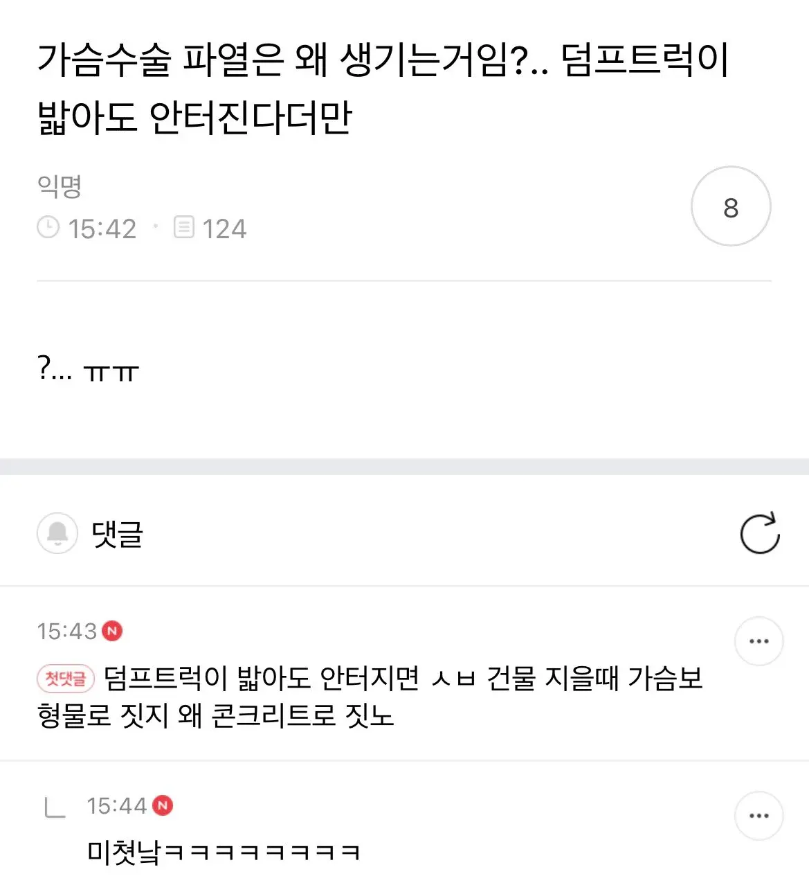

116 · 21 · 11 시간 전 · 원문

수집 당시 댓글 21개
유아학교 · 14 시간 전
KM53 · 14 시간 전
↳ 답글 · 도플갱어2 · 13 시간 전
거짓말 · 12 시간 전
글레바 · 12 시간 전
근데 트럭이밟아도 안터진다 저거 가슴보형물상담받을때 꼭 하는 말이라던데 아는 여사친도 상담갔다 저소리듣고옴
아니이개외안되 · 12 시간 전
덤프트럭이 살살 밟았나봐
↳ 답글 · LuigiLegnani · 59 분 전
트럭도 살살 밟으면 안터지는거 몰랐음?
랑군 · 12 시간 전
https://mnews.sbs.co.kr/news/endPage.do?newsId=N1003410529
새콤달콤동치미 · 12 시간 전
콘크리트가 좆으로 보이나 어딜 덤프트럭 무게가지고 건물을 짓네마네 하고있어
↳ 답글 · 도파민수용체결함 · 3 시간 전
ㄹㅇㅋㅋ 철근콘크리트 덩어리는 덤프를 위로 100대를 쌓아도 버틴다
↳ 답글 · 너는지금뭐해 · 3 시간 전
걍 웃어라
보지거머리 · 11 시간 전
포장 갓 뜯은 가슴 보형물의 외장재의 인장강도가 실리콘이 압축되었을 때 발생하는 압력을 버티는거지 덤프트럭의 무게를 온전히 버티는게 아님.
강군친구 · 11 시간 전
철근+콘크리트 보다 비싸서!
고싶어 · 11 시간 전
덤프트럭 밟아도 안 터지면 마이크 타이슨이 때려도 안 터지나?
맛있는고등어 · 7 시간 전
인체도 보형물로 지었다면
↳ 답글 · 로보트 · 2 시간 전
13번째아해 · 4 시간 전
뭐 빈차 상태의 덤프가 밟는다면 1, 2축은 대략 2.5톤 정도, 3, 4축은 대략 1톤 정도 무게가 걸리겠네. 슴가 보형물이 소형이라 반대쪽 바퀴 무게는 안 실릴듯
왜그러냐진짜로 · 3 시간 전
퇴근하고싶다집에보내주라 · 2 시간 전
정말 덤프트럭에 밟히면 보형물이 터졌는지 아닌지는 상관 없게 될 거라서 그런가 봐
산업핵폐기물 · 2 시간 전
해해해 · 2 시간 전
보통 저런데서 언급하는 내구성은 막 패키지 뜯었을때 상품 내구도를 과장 섞어서 말하는거고 생체 내에서 장기간 지난 이후의 내구도를 말하는게 아니긴함. 생체 내 환경이 내구도 갉아먹는데 아주 좋은 환경이라
댓글
수집 당시 댓글 21개
유아학교 · 14 시간 전
KM53 · 14 시간 전
· 도플갱어2 · 13 시간 전
거짓말 · 12 시간 전
글레바 · 12 시간 전
근데 트럭이밟아도 안터진다 저거 가슴보형물상담받을때 꼭 하는 말이라던데 아는 여사친도 상담갔다 저소리듣고옴
아니이개외안되 · 12 시간 전
덤프트럭이 살살 밟았나봐
· LuigiLegnani · 59 분 전
트럭도 살살 밟으면 안터지는거 몰랐음?
랑군 · 12 시간 전
https://mnews.sbs.co.kr/news/endPage.do?newsId=N1003410529
새콤달콤동치미 · 12 시간 전
콘크리트가 좆으로 보이나 어딜 덤프트럭 무게가지고 건물을 짓네마네 하고있어
· 도파민수용체결함 · 3 시간 전
ㄹㅇㅋㅋ 철근콘크리트 덩어리는 덤프를 위로 100대를 쌓아도 버틴다
· 너는지금뭐해 · 3 시간 전
걍 웃어라
보지거머리 · 11 시간 전
포장 갓 뜯은 가슴 보형물의 외장재의 인장강도가 실리콘이 압축되었을 때 발생하는 압력을 버티는거지 덤프트럭의 무게를 온전히 버티는게 아님.
강군친구 · 11 시간 전
철근+콘크리트 보다 비싸서!
고싶어 · 11 시간 전
덤프트럭 밟아도 안 터지면 마이크 타이슨이 때려도 안 터지나?
맛있는고등어 · 7 시간 전
인체도 보형물로 지었다면
· 로보트 · 2 시간 전
13번째아해 · 4 시간 전
뭐 빈차 상태의 덤프가 밟는다면 1, 2축은 대략 2.5톤 정도, 3, 4축은 대략 1톤 정도 무게가 걸리겠네. 슴가 보형물이 소형이라 반대쪽 바퀴 무게는 안 실릴듯
왜그러냐진짜로 · 3 시간 전
퇴근하고싶다집에보내주라 · 2 시간 전
정말 덤프트럭에 밟히면 보형물이 터졌는지 아닌지는 상관 없게 될 거라서 그런가 봐
산업핵폐기물 · 2 시간 전
해해해 · 2 시간 전
보통 저런데서 언급하는 내구성은 막 패키지 뜯었을때 상품 내구도를 과장 섞어서 말하는거고 생체 내에서 장기간 지난 이후의 내구도를 말하는게 아니긴함. 생체 내 환경이 내구도 갉아먹는데 아주 좋은 환경이라